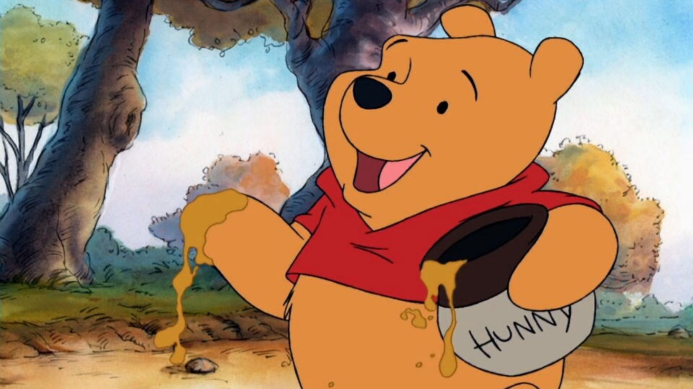

Fatos e opiniões sobre o desenho Ursinho PoohNeste site vou apresentar algumas curiosidades e vou relatar algumas opiniões sobre esse denho
1° fato:
O ursinho pooh foi criado pelo escritor britânico Alan Alexander Milne no livro Winnie-the-pooh, inspirado no ursinho de pelúcia de seu filho,Christopher Robin
2° Fato:
O pooh é o segundo personagem de ficção mais lucrativo do mundo,gerando bilhões com produtos e perdendo apenas para o mickey mouse.
3° Fato
O filme original de 1977 foi a ultima produção com a participação direta de walt disney,que comprou os direitos em 1961.